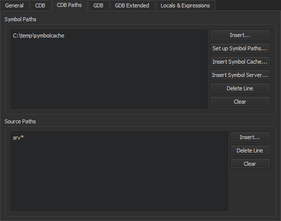

CDB Paths
To obtain debugging information for the operating system libraries for debugging Windows applications, add the Microsoft Symbol Server to the symbol search path of the debugger:
- Go to Preferences > Debugger > CDB Paths.

- In the Symbol Paths group, select Insert.
- Select the directory where you want to store the cached information. Use a subfolder in a temporary directory, such as
C:\temp\symbolcache. - Select OK.
Note: Populating the cache might take a long time on a slow network connection.
To use the Source Server infrastructure for fetching missing source files directly from version control or the web, enter the following string in Source Paths: srv*.
See also How To: Debug, Debugging, Debuggers, and Debugger.